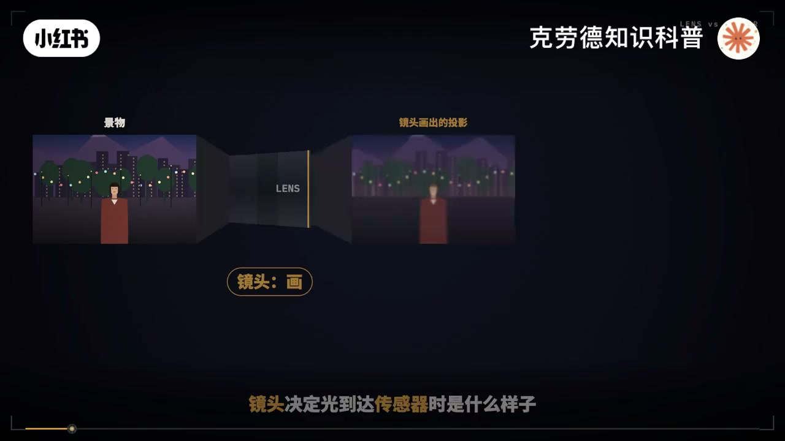
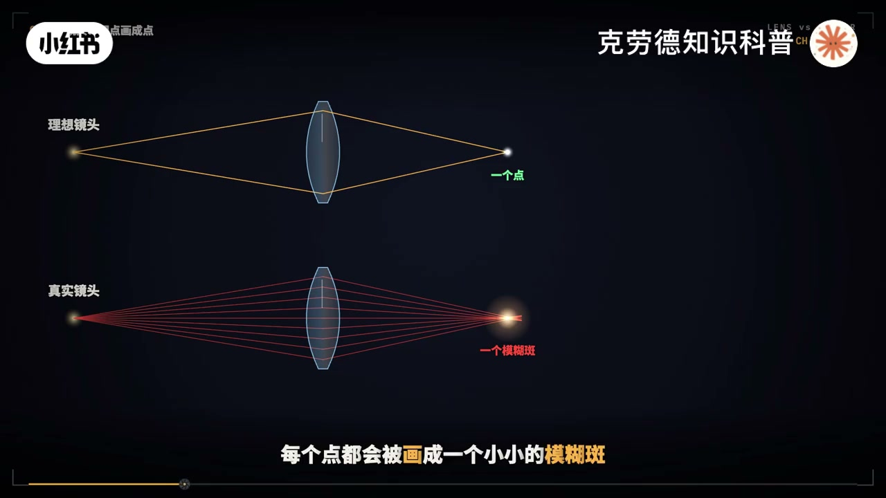
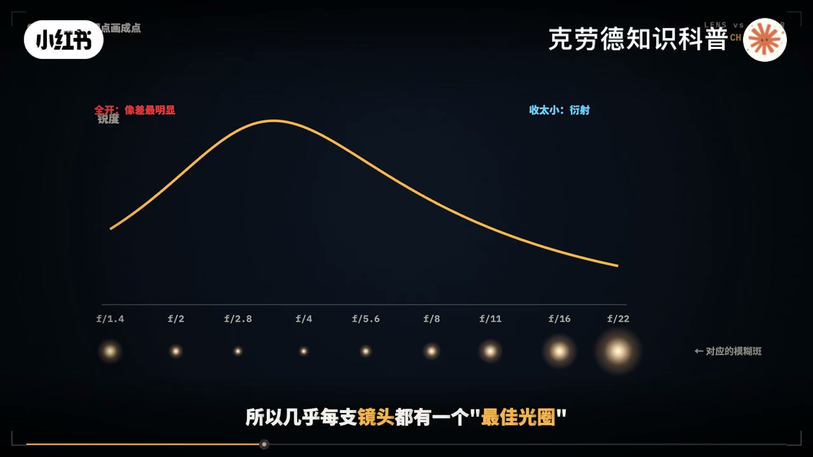
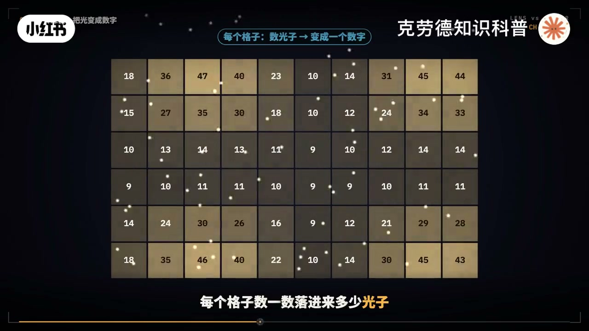
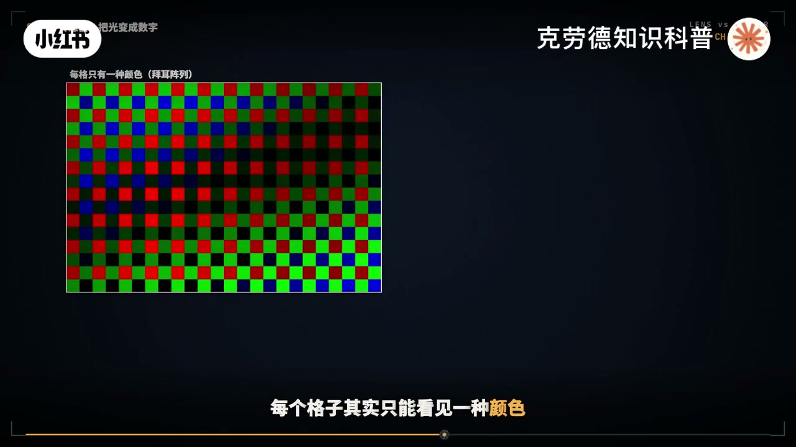
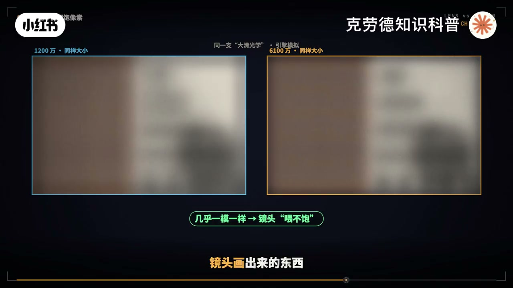
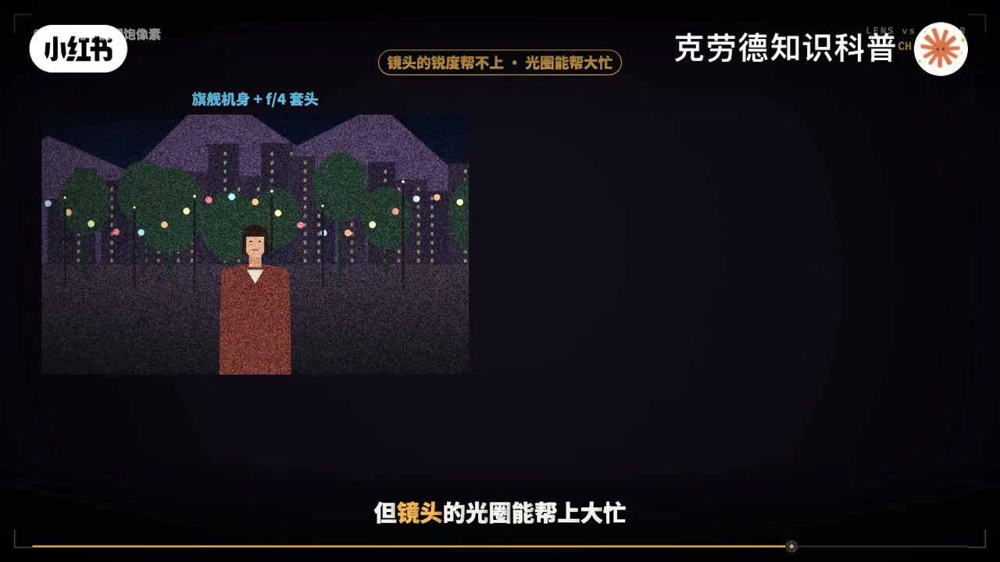
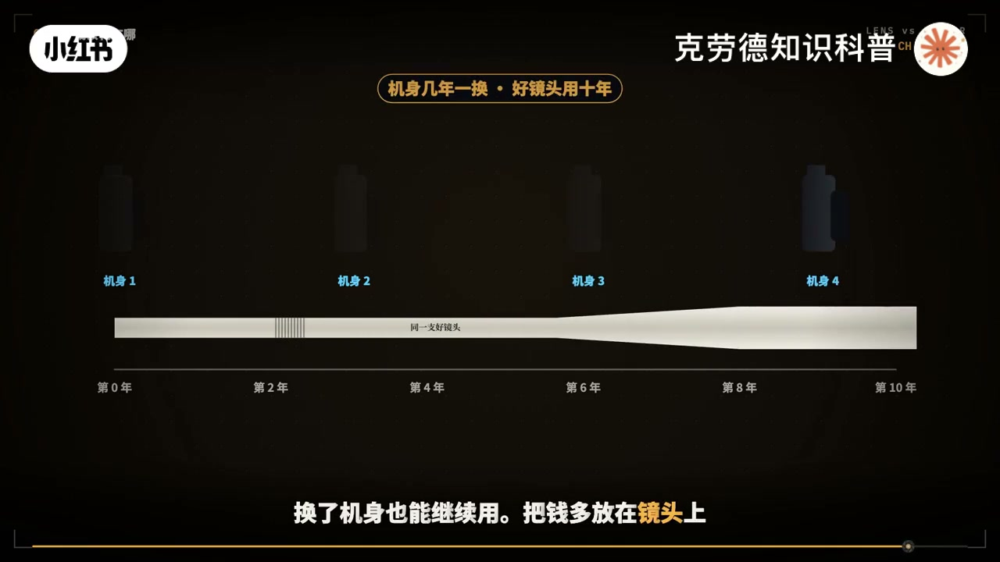

内容要点
「镜头和相机哪个对画质影响更大？」教程要点：一台入门机身配一支顶级镜头 → 一台旗舰机身配一支套机镜头 → 谁拍得更好 → 这个问题吵了很多年；详见正文。
知识结构
一台入门机身配一支顶级镜头
另外几件传感器
像素多了
- 一台入门机身配一支顶级镜头
- 一台旗舰机身配一支套机镜头
- 谁拍得更好
- 这个问题吵了很多年
- 答案却不是二选一
一台入门机身配一支顶级镜头
00:00–02:13一台入门机身配一支顶级镜头
一台入门机身配一支顶级镜头；一台旗舰机身配一支套机镜头；谁拍得更好；这个问题吵了很多年；答案却不是二选一；再举个更极端的；一颗几百块钱的大清光学水管镜头；装在1200万像素的机身上；和装在6100万像素的机身上；拍出来的画面几乎一模一样；多出来的4900万像素全浪费了；因为镜头和传感器管的；根本不是同一件事；镜头决定光到达传感器时；是什么样的；传感器决定；这些光被记录成什么样；一个负责画一个负责记；这期把画质拆开；看清每一项到底归水管；看完你就知道；你的钱该花在哪；我们说一张照片画质好；其实说的是好几件事；够不够锐；细节多不多；单不干净；亮不暗不有没有层次；颜色准不准；背景虚化好不好看；还有边缘有没有紫边；暗角变形；把这些分一分；锐度；相差；虚化；暗角；主要归镜头管；噪点；宽容度；主要归传感器管；细节和颜色；两边一起管；所以镜头和传感器；谁更重要；得先问你在意的是哪一项；下面一项一项看；理想的镜头；会把景物上的每一个点；画成传感器上的一个点；可真实的镜头做不到；每个点都会被画成；一个小小的模糊斑；镜头的锐度；说到底就是这个斑有多小；斑为什么会糊；第一个原因；是球面相差；镜片边缘的光；比中间的光折的更狠；汇聚点前后错开；焦点就成了一团；第二个原因是色差；玻璃对不同颜色的光折；射不一样；红 绿 蓝；各有各的焦点；拍到高反差的边缘；就会出现紫边 绿边；越往画面边缘；问题越多；星点被拉成彗星的形状；直线被拉弯；四角发暗；这就是为什么；很多镜头中心锐；边缘软；那为什么好镜头那么大；那么贵；因为每多一片特殊镜片；就能把一种；像插底消掉一样；顶级镜头十几片镜片；好几片特殊玻璃；就是为了把这个模糊；扳压得更小；在画面边缘也一样小；光圈也会改变这个扳；开到最大时；相差最明显；收两三档；通常最锐；再继续收小；眼射又会让扳变大；所以几乎每只镜头；都有一个最佳光圈；除了锐不锐；镜头还决定了


02:11–04:29另外几件传感器
另外几件传感器；管不了的事；逆光时的眩光和轨影；背景虚化的形状和质感；整张照片的通透感；这些靠的是镜片镀膜；和光学设计；镜头锐不锐；行业里看一张叫MTF的；曲线图；原理很直观；把一组黑白相间的细线；投到传感器上；看透过去之后；还剩多少黑白反差；线条越粗；越容易保住反差；线条越细；越容易糊成一片灰；好镜头的本事；就是在很细的线上；依然保住大部分反差；而且从画面中心；到边缘都保得住；看曲线；只要记两点；线越高越好；线越平越均匀；高说明锐；平说明边缘不掉；镜头画好了一幅图；传感器要把它记下来；它的表面是几千万的小格子；每个格子数一数；落进来多少光子；再把这个数变成一个数字；第一件事是分辨率；格子越多越密；能记下的细节越多；前提是；镜头真的画出了这些细节；这一点下一张细说；第二件事是噪点；光子落进格子是随机的；这个起伏谁也消不掉；只能靠收更多的光来压；现在的传感器；已经能把一半以上；好的能到八成左右的光子；变成信号；离满分已经不远了；这意味着什么；传感器技术在进步；暗光下能挤出来的；通常也就是零点挤；挡到一挡；想要干净得多；只能收更多的光；要么传感器面积更大；要么镜头光圈更大；第三件事是宽容度；每个格子能装下的光有上限；装满了就一出成死白；最暗的那一头；又会被垫入自身的杂讯淹没；上限和下限之间的距离；就是宽容；这一项；几乎完全看传感器；第四件事是颜色；每个格子；其实只能看见一种颜色；红 绿 蓝像漆盘一样排开；剩下的颜色；要靠周围的格子猜出来；绿色片怎么调；机器怎么算；决定了一台相机的色彩风格；网上常说；这只镜头；位不保6100万像素；什么叫位不保；我们用一个最极端的例子来看；一颗几百块钱的；大清光学水管镜头；光线充足；收到最锐的光圈；对着同一个场景拍；镜头画出来的每个点；都是一个不小的模糊般；放到传感器上；差不多有十几微米宽；装在1200万像素的机身上；一个像素约8微米宽；一个模糊般盖住两三个像素；装在6100万像素的机身上；一个像素只有3.8微米；同一个般盖住了四五个像素


04:28–06:44像素多了
像素多了；只是把同一团模糊；切得更碎；挤得更清楚；模糊本身一点没少；两张照片；放到同一个屏幕上看；几乎一模一样；这就是位不保；镜头画出来的东西；不够6100万个格子去分；反过来；换一只顶级镜头；模糊般缩到4微米左右；1200万像素的格子；笔般还大；般再小；也被格子吞掉；细节卡在像素上；换到6100万像素；般和格子差不多大；细节一下就出来了；这时候；瓶颈是机身；所以最终的画面；是镜头的模糊；和像素的格子；叠在一起的结果；两个模糊叠加；结果比任何一个单独都糊；哪一边更糊；哪一边就是瓶颈；画成一张图就很清楚；横轴是像素数；纵轴是最终能拍出的细节；顶级镜头的曲线；一路往上走；普通镜头很快走平；大清光学；几乎一开始就是平的；还要说一句公道话；贵不保；不等于像素多了会变差；同样大小看；高像素机身；永远不会比低像素的差；只是多出来的那部分白花了；噪点和宽容度这两项；镜头的锐度帮不上忙；但镜头的光圈能帮上大忙；夜里用F1.4拍；也用F4多收三档光；比任何一次传感器换代都管用；所以谁更重要；取决于你拍什么；拍风景 建筑；要细节；要边缘也锐；镜头和高像素传感器都重要；镜头往往是先到的瓶颈；拍夜景 室内 演唱会；最重要的是收光；大光圈镜头和大尺寸传感器；都能帮忙；大光圈往往性价比最高；拍人像；虚化和质感几乎全看镜头；拍日出日落；大光比；宽容度几乎全看传感器；拍运动；拍鸟；要跟得上；拍得清；对焦速度和连拍；主要看机身；远处的细节；要看长焦镜头的锐度；和像素密度；还有一个很现实的差别；机身几年就会更新换代；好镜头却能用十年；换了机身也能继续用；把钱多放在镜头上；长期看更划算；但前提是；机身不能太老；被焦跟不上；宽容度不够；高感太脏；再好的镜头也就不回来；最后用一句话回答这期的问题；镜头决定画面能有多好；传感器决定；能把这份好记下来多少；哪一边短；就先补哪一边




口述/画面要点（40段）
结合 Whisper medium 与画面大字整理；专有名词已校对。
一台入门机身配一支顶级镜头
一台旗舰机身配一支套机镜头
谁拍得更好
这个问题吵了很多年
答案却不是二选一
再举个更极端的
一颗几百块钱的大清光学水管镜头
装在1200万像素的机身上
和装在6100万像素的机身上
拍出来的画面几乎一模一样
多出来的4900万像素全浪费了
因为镜头和传感器管的
根本不是同一件事
镜头决定光到达传感器时
是什么样的
传感器决定
这些光被记录成什么样
一个负责画一个负责记
这期把画质拆开
看清每一项到底归水管
看完你就知道
你的钱该花在哪
我们说一张照片画质好
其实说的是好几件事
够不够锐
细节多不多
单不干净
亮不暗不有没有层次
颜色准不准
背景虚化好不好看
还有边缘有没有紫边
暗角变形
把这些分一分
锐度
相差
虚化
暗角
主要归镜头管
噪点
宽容度